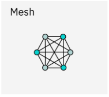

Tipos de redes |

Redes de Computadoras |
Tipos de redes |
|
|
Topologias de redes |
¿Que son las topologias de redes?La topología de red se refiere a la forma en que los nodos y las conexiones se organizan física y lógicamente en una red. |
| Topologia | Definicion | Imagen |
|---|---|---|
| Topologia punto a punto | Una red punto a punto, o una topología de puntos, es la red más fácil de entender y el tipo de topología de red más básico. Son simplemente dos nodos que están conectados por un único enlace. Los datos viajan ida y vuelta entre estos dos endpoints. Si bien este es el tipo de red más fácil de configurar, su simplicidad es su propia desventaja. Una topología punto a punto no es aplicable a la mayoría de los casos de uso modernos.
Existe de tipo Utorrens y la computadora que comparte debe de estar encendida y la que recibe tambien, comunicacion logica donde la informacion viaja en dos direcciones. |
|
| Topologia de bus | En una red de bus, cada nodo está conectado a un solo cable, como paradas de bus que se bifurcan desde una ruta de bus. Toda la transmisión de datos fluye a través de esa única conexión central. Debido a que todo está conectado en línea recta a partir de un cable central, es una topología rentable y fácil de configurar y agregar nuevos nodos.
La computadora debe de tener tarjeta de red para poder conectarse. Necesita un cable UTP CSMA/CD es su metodo o protocolo de tipo bus de detector de colisiones para redes Ethernet. |
|
| Topologia de anillo | En una red de anillo, los nodos y enlaces se organizan en un anillo. Cada nodo tiene exactamente dos vecinos. En una red de este tipo, los repetidores se emplean para garantizar que los datos puedan llegar a los nodos que están más alejados entre sí en el anillo. Los datos generalmente fluyen unidireccionalmente en una red de anillo.
Gira en un ciclo cerrado, a los concentradores de este tipo de conexion se les llama MAU. A el aparato que transporta esta informacion se le llama Token, haciendo alusion a el nombre de esta topologia Tokenring. Cables UTP con conectores RJ45. No hay colisiones de informacion ya que solo se va en un solo sentido. FDDI con la conexion de doble anillo que permite generar la transmision en un anillo y en otro sentido en otro anillo. Si una conexion se descompone la otra puede seguir funcionando. La mas costosa de todas. Necesita conectores ST o BST, Fibra optica de multimodo y seran dos lineas de comunicacion para que la informacion viaje en ambos sentidos. |
|
| Topologia de estrella | En una red de estrella, todos los nodos están conectados a un hub central. Los nodos se colocan alrededor de ese hub central en una forma que se asemeja aproximadamente a una estrella.
Utiliza una red Ethernet y generalmente usa cable UTP categoria 5 o mas alta con conexion RJ45. La computadora debe de tener tarjeta de red para poder conectarse. Aparato concentrador es necesario. Logicamente su informacion viaja en bus, a pesar de que fisicamente luzca como una estrella. |
|
| Topologia de arbol | Es útil pensar en una topología de árbol como una combinación de una red de bus y una red de estrella. En una topología de árbol, sigue habiendo un hub central que lo conecta todo, pero en lugar de nodos individuales que se ramifican desde ese nodo raíz central, se trata de otras redes de estrella. Este tipo de conexion se refiere a varios concentradores conectados entre si y ademas hacia un router (o bridge) conectado a mas routers, luego sigue el modem que enlaza a internet. | |
| Topologia de malla | En una red de malla o totalmente complexa, cada dispositivo está conectado al menos a otro nodo de la red. En una red de malla completa, cada nodo está conectado a todos los demás nodos. En una red de malla parcial, solo algunos de los nodos se conectan directamente entre sí, mientras que otros necesitan pasar a través de nodos adicionales para llegar al nodo objetivo.
Conexion de tipo todo con todo, conectando cada maquina con todas las demas. Necesita dispositivos de interconexion o demasiadas tarjetas de red para conectar la computadora con cada dispositivo diferente (total de computadoras de red menos 1). La ventaja es que la conexion no fallara si una sola computadora se desconecta o falla. Cable UTP o STP con conectores RJ45. Se requieren varios concentradores. |
 |
| Topologia hibrida | Una topología de red híbrida es cualquier tipo de red que emplea una combinación de topologías. Una red de árbol que combina una red en estrella y una red de bus es un tipo de topología híbrida.
Une a las computadoras entre diferentes topologias dentro de una red, los requisitos dependen de los tipos de topologias que se esten combinando. |
Medios de transmision |
| Tipos | Definicion | Imagen |
|---|---|---|
| Cable de par trenzado | Se compone de dos cables conductores diferentes que van trenzados uno con el otro. Varios de estos pares vienen agrupados en una funda protectora. Viaja en una conexion de tipo ethernet. Existe 4 tipos de hilos con colores que lo diferencias. La velocidad de transferencia varia de categoria. La distancia que abarca llegan hasta 100 metros junto con los cables PASHCORT que une a la computadora a un concentrador. Categoria 5 100 mb/s, los de categoria 6 es hasta 1000 mb/s a largas distancias y a cortas distancias hasta 10,000 o 100,000 mg/s. La velocidad depende del tipo de cable y de la distancia que recorre. Es el tipo de cable que más se utiliza para transmisión. El par trenzado es de dos clases:
Par trenzado sin blindaje (UTP).Este cable tiene la capacidad de bloquear las interferencias sin tener que depender de una protección física para lograrlo. Se utiliza para aplicaciones telefónicas.Par trenzado blindado (STP).Esta variedad de cable posee una cubierta especial para evitar la interferencia. Se utiliza para transmisiones de alta velocidad y también en los conductos de datos/voz de las líneas telefónicas. |
 |
| Cable coaxial | Tiene un revestimiento de plástico en cuyo interior se encuentran dos conductores paralelos, cada uno con su propia cubierta de protección particular. Transfiere los datos de dos maneras: el modo de banda base y el de banda ancha. La televisión por cable y las redes de televisión analógica utilizan ampliamente los cables coaxiales.
Tiene un centro de cobre que lo recubre una malla de aluminio que impide la interferencia electromagnetica, hay dos grosores el grueso y el delgado. Soporta hasta 100mb/s. |
|
| Cable de fibra optica | Utiliza el concepto del reflejo de la luz a través de un núcleo de vidrio o plástico. El núcleo está rodeado por una cubierta de vidrio o plástico menos densa llamada revestimiento, donde el haz de luz va rebotando. Se utiliza para la transmisión de grandes volúmenes de datos.
Existen de tipo mono o multimodo. En el monomodo solo un haz de luz se transmite a travez del cable a traves de 40 o mas km, se utiliza para poca informacion pero distancias muy largas y necesita un hilo para transmitir y otro para recibir; en el multimodo transfiere varios haces de luz a travez del nucleo de la fibra pero en diferentes angulos de refraccion abarca maximo 600m, se utiliza para una gran cantidad de informacion pero cortas distancias. Para utilizar este tipo de transferencia de datos se necesita una tarjeta de red de fibra optica y se necesita un transceptor o convertidor de señales que toma la señal electrica y la convierte a haces de luz o vice versa, tambien se necesitan conectores de fibra optica y ademas de aparatos concentradores o switch de fibra optica. Entonces esta tranferencia destaca por su eficiencia pero su costo es muy elevado. Se utiliza con redes troncales que ayudan a transferir la informacion con mayor prioridad de mayor tamaño que necesita viajar mas rapido. |
| Tipos | Definicion | Imagen |
|---|---|---|
| Microondas terrestres | Empleando antenas parabólicas de unos 3 metros de diámetro, se emite una señal de microondas que posee un alcance de varios kilómetros, empleando frecuencias de entre 1 y 300 GHz. |  |
| Microondas satelitales | Opera en base al vínculo entre dos o más estaciones base, a través de la intermediación de un satélite suspendido en la atmósfera. Cada satélite posee sus bandas de frecuencia específicas, pero tiene un alcance mucho mayor y una velocidad más alta. Pero la cantidad total de megas que se tiene en una compañia, se debe de repartir entre las personas que contratan ese servicio de transferencia de datos, conviene tenerlo en zonas aisladas como la sierra o ranchos muy alejados donde no conviene tener un cableado tan amplio. | |
| Infrarrojos | Emplea moduladores de la luz infrarroja no coherente, que al estar alineados directamente o reflejados en una superficie adecuada, alcanzan entre 300 GHz y 384 THz de velocidad de transmisión de datos. Sin embargo, no puede atravesar las paredes. | |
| Ondas de radio | Emplea ondas en diversas frecuencias (AM, FM, HF, VHF, UHF, etc.) para emitir y recibir las señales de información, logrando una eficacia alta en cortas distancias, incluso a través de paredes, pero perdiéndose a medida que el receptor se aleja físicamente del emisor. |  |
| Wifi | Las redes wifi funcionan mediante la transmisión de ondas de radio en diversas frecuencias para brindar conectividad inalámbrica a redes y a internet a diversas velocidades. Típicamente se les agrupa en rangos de frecuencia de 2.4 GHz, 5 GHz y 6 GHz. Las señales se propagan por el aire, a diferencia de las comunicaciones cableadas que usan cables como par trenzado o la fibra optica. |